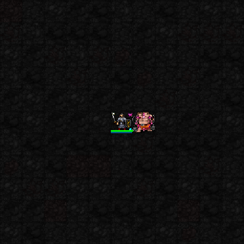
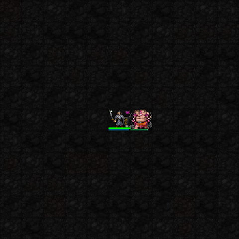

5성 · 서큐버스의 밤
유혹을 소모해 확률로 적 하나를 잠시 아군화
현재 화면: 원래 몬스터의 아군 표시 · 유혹 권능 사용 시 효과
권능 사용 직후의 순간 효과 두 프레임입니다. 지속 표식·중첩 변화 전체를 보여주는 영상은 아닙니다. 사용 연출 자체가 매혹 성공을 뜻하지는 않습니다. 성공 시 해당 몬스터 하나가 잠시 아군이 되고, 실패·정신 면역 대상에는 약화가 적용됩니다.

새 1·3·5성 전용 이펙트 보기 · 아래는 수정 전 보존 캡처입니다.
아야메 VFX02 승인 완료. 기존 실제 SDL 캡처에서 초코의 현재 이펙트를 모았습니다. 신규 전용 연출을 제작한 상태는 아닙니다. 높은 자원·고정 장비의 테스트 전투장이며 일반 던전 플레이 영상은 아닙니다.
유혹 표식; 직접 공격으로 중첩해 대상 약화
현재 화면: 유혹 권능 사용 시 효과 · 표식 전용 도트 없음
권능 사용 직후의 순간 효과 두 프레임입니다. 지속 표식·중첩 변화 전체를 보여주는 영상은 아닙니다.

인접 표적의 유혹을 소모해 피해·HP 회복
현재 화면: 공통 타격 효과
권능 사용 직후의 순간 효과 두 프레임입니다. 지속 표식·중첩 변화 전체를 보여주는 영상은 아닙니다.

유혹을 소모해 확률로 적 하나를 잠시 아군화
현재 화면: 원래 몬스터의 아군 표시 · 유혹 권능 사용 시 효과
권능 사용 직후의 순간 효과 두 프레임입니다. 지속 표식·중첩 변화 전체를 보여주는 영상은 아닙니다. 사용 연출 자체가 매혹 성공을 뜻하지는 않습니다. 성공 시 해당 몬스터 하나가 잠시 아군이 되고, 실패·정신 면역 대상에는 약화가 적용됩니다.